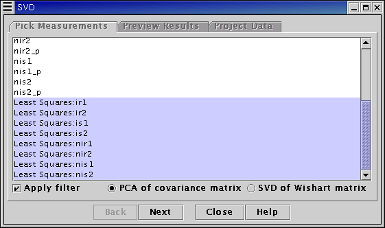
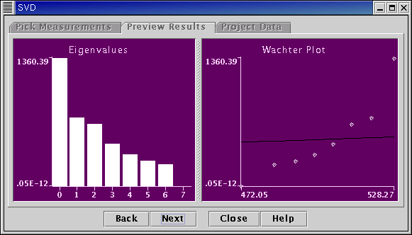
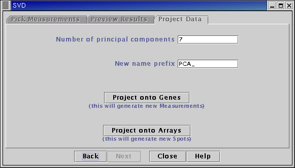

See the Plugin Commands help page for details on the commands offered by this plugin.
This plugin calculates a Singular Value Decomposition (SVD) of a matrix. SVD is a method of representing the matrix in terms of a set of orthogonal vectors - the eigenvectors, with different weights - the eigenvalues. The larger the eigenvalue the greater the contribution the corresponding eigenvector makes in representing the matrix. A few of the largest eigenvalue, eigenvector pairs can then approximate accurately the original matrix, making SVD a useful method of approximating a data matrix using just a few dimensions.
Formally the SVD of a matrix A is defined as A = UDVT, where VT is the transpose of V. The matrix D is diagonal, whose elements contain the eigenvalues. The columns of the matrices U and V correspond to the eigenvectors of A.
Given a selected set of Measurements the user has the option of calculating the SVD of the sample covariance matrix formed from the selected Measurements, or the SVD of the Wishart matrix formed from the selected Measurements.
If the selected Measurements form a data matrix X then the Wishart matrix is equal to XXT (where XT is the transpose of X).
The sample covariance matrix is equal to (X - m)(X - m)T (where m is the mean of X).
Principal Component Analysis (PCA) is essentially an SVD of the data covariance matrix.
Once the SVD of the chosen matrix has been calculated the eigenvalues are displayed. Also displayed is a plot of the eigenvalues against the expected eigenvalues from a random covariance matrix with the same total variance. This gives a (non-rigorous) means of identifying by eye how many eigenvalues and eigenvectors are significant.
Finally the plugin allows the user to project the original data onto the eigenvectors - either the columns of U or the columns of V. If "PCA of covariance matrix" was the option originally chosen, it is X -m that is projected onto the eigenvectors.
Notes
For additional details see,

Select Measurements to form the data matrix from the list on the left-hand side of the panel. Select the matrix (covariance or Wishart) on which to perform the SVD.

Eigenvalues are displayed in the left hand graph. The right hand graph shows a "Wachter plot" of the eigenvalues. This is a plot of the eigenvalues against the expected eigenvalue, at the same quantile, from a random matrix. The random matrix has independent and identically distributed (i.i.d.) elements drawn from a distribution whose variance is equal to the average of the observed eigenvalues. This gives a (non-rigorous) means of assessing whether an observed eigenvalue is the consequence of a genuine dominant direction in the data, or the result of just a chance fluctuation due to the finite number of Measurements in what should otherwise be data that has no dominant directions. The solid black line shows the y = x line. Eigenvalues above this line are usually taken to be of potential interest. For more details see, for example, Johnstone, I.M. (2001), "On the distribution of the largest eigenvalue in Principal Component Analysis", Annals of Statistics 29:295-327.

Choose whether to project onto the eigenvectors corresponding to the columns of U, or the eigenvectors corresponding to the columns of V.